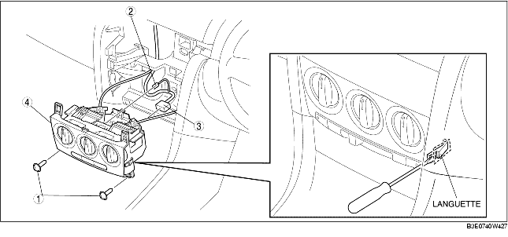

DEPOSE D'UNITE DE COMMANDE DE CLIMATISATION [CLIMATISATION MANUELLE]
B3E074061190W02
1. Débrancher le câble négatif de la batterie.
2. Déposer les pièces suivantes :
-
(1) Panneau de cendrier (voir la section DEPOSE/REPOSE DE CONSOLE.)
-
(2) Dégager le levier de déblocage de capot du panneau inférieur. (voir la section DEPOSE/REPOSE DE SERRURE ET DE LEVIER DE DEBLOCAGE DE CAPOT [conduite à gauche].) (voir la section DEPOSE/REPOSE DE SERRURE ET DE LEVIER DE DEBLOCAGE DE CAPOT [CONDUITE A DROITE].)
-
(3) Bas de portière avant (voir la section DÉPOSE/REPOSE DE BAS DE PORTIÈRE AVANT.)
-
(4) Garniture latérale avant (voir la section DÉPOSE/REPOSE DE GARNITURE LATÉRALE AVANT.)
-
(5) Panneau inférieur (voir la section DEPOSE/REPOSE DE PANNEAU INFERIEUR.)
-
(6) Bas de portière avant (droite) (voir la section DÉPOSE/REPOSE DE BAS DE PORTIÈRE AVANT.)
-
(7) Garniture latérale avant (droite) (voir la section DÉPOSE/REPOSE DE GARNITURE LATÉRALE AVANT.)
-
(8) Panneau de décoration (voir la section DÉPOSE/REPOSE DE PANNEAU DE DÉCORATION.)
-
(9) Boîte à gants (voir la section DÉPOSE/REPOSE DE BOÎTE À GANTS.)
-
(10) PJB et support de PJB (voir la section DEPOSE/REPOSE DE BOITE DE RACCORDEMENT COTE PASSAGER (PJB).)
3. Détacher le collier de faisceau de câblage de PJB du tabeau de bord.
4. Déposer le module de panneau central. (voir la section DEPOSE/REPOSE DE MODULE DE PANNEAU CENTRAL.)
5. Déposer le câble d'admission d'air et le câble de mélange d'air ainsi que le câble de mode de débit d'air de l'unité de climatisation.
6. Relâcher les languettes gauche et droite, et déposer selon l'ordre indiqué dans le tableau.

|
1
|
Vis
|
|
2
|
Connecteur du contacteur de ventilateur
|
|
3
|
Connecteur d'unité de commande de climatisation
|
|
4
|
Unité de commande de climatisation
|